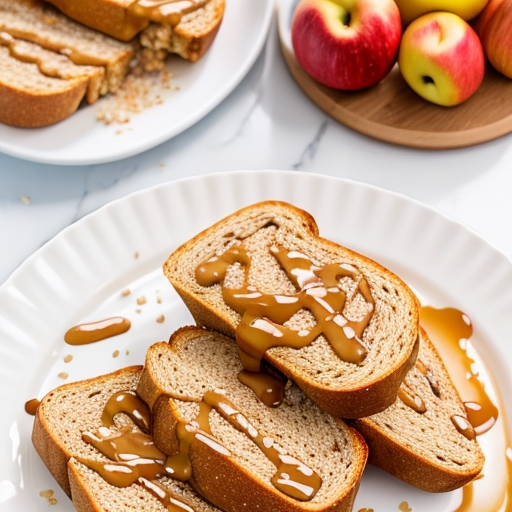

Loki's Trickster Toast

Description
A slice of hearty, whole-grain bread toasted to perfection and spread
with a generous layer of almond butter, topped with sliced apples, a
sprinkle of cinnamon, and a drizzle of honey.
Ingredients
- Slices of your favorite bread (such as whole grain, sourdough,
or gluten-free)
- Almond butter or any nut butter of your choice
- Sliced apples
- Ground cinnamon
- Honey or maple syrup for drizzling
Instructions
- Toast the bread slices to your desired level of crispness.
- Once the bread is toasted, spread a generous amount of almond butter
or your preferred nut butter on each slice. You can adjust the amount
based on your preference for nutty flavor.
- Place thinly sliced apples on top of the nut butter. You can arrange
them in a neat pattern or overlap them for a more artistic touch.
- Sprinkle a pinch of ground cinnamon over the apple slices. The warmth
and aroma of cinnamon will complement the flavors of the toast.
- If desired, drizzle a small amount of honey or maple syrup over the toast.
This will add a touch of sweetness and balance out the flavors.
- Serve Loki's Trickster Toast immediately and enjoy the playful combination
of creamy nut butter, crisp apples, and warm cinnamon flavors.